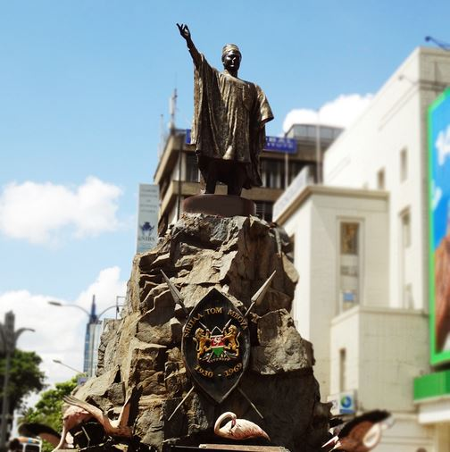

AFRICA
The Great Sphinx of Giza

The Great Sphinx of Giza, commonly referred to as the Sphinx of Giza or just the Sphinx, is a limestone statue of a reclining sphinx, a mythical creature. Facing directly from west to east, it stands on the Giza Plateau on the west bank of the Nile in Giza, Egypt.
African Renaissance Monument

The African Renaissance Monument is a 52 m tall copper statue located on top of one of the twin hills known as Collines des Mamelles, outside Dakar, Senegal.
Tom Mboya Memorial Statue
The Tom Mboya Monument is along the Moi Avenue in Nairobi, Kenya. It was erected in 2011 in honour of Tom Mboya, a Kenyan minister who was assassinated in 1969. The monument stands about twenty meters from where Mboya was murdered. The statue stands at not less than ten meters from ground level.